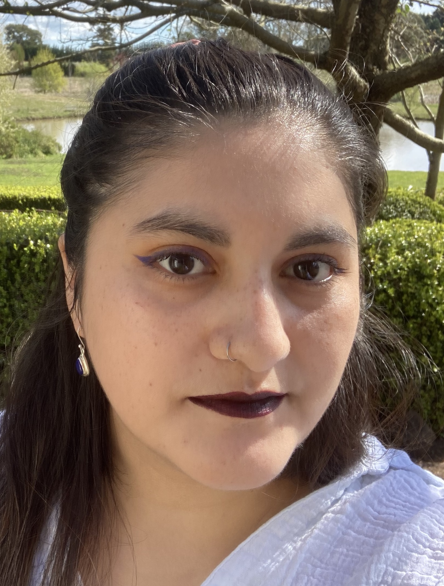

Becca Rojas

Summary
Front-end developer in the making. With a background in Films. Looking for a part-time position as a Junior Web dev.
I am very excited to start this new career with a better understanding of my strengths and interests.
Education
- CCEL English course (2019)
- Bachelors in Film (2013-2017)
Work experience
Barista and all rounder(2020-2023)
Main dutties
- Dialing coffee
- Free pour latte art
- Customer service
- Open and close barista station
Production assistant (2018 - 2019)
Government funded project to make 3 previously premiered films -from Chile- accessible by adding CC, sign language and audiodescription.
- Organise film shoting for Chilean Sign Language
- Writing Closed Captions
- Meeting project deadlines
- Exhibit to the targeted audience
- Promotion of the films
Skills
- JS ⭐️⭐️
- HTML/CSS ⭐️⭐️⭐️
- VS code ⭐️⭐️
- Editing softwares ⭐️⭐️⭐️⭐️⭐️
- Team Work ⭐️⭐️⭐️⭐️⭐️
Other Achievements
I can speak English (fluent) and Spanish (native)
I also like to paint, to swim and everything cat related